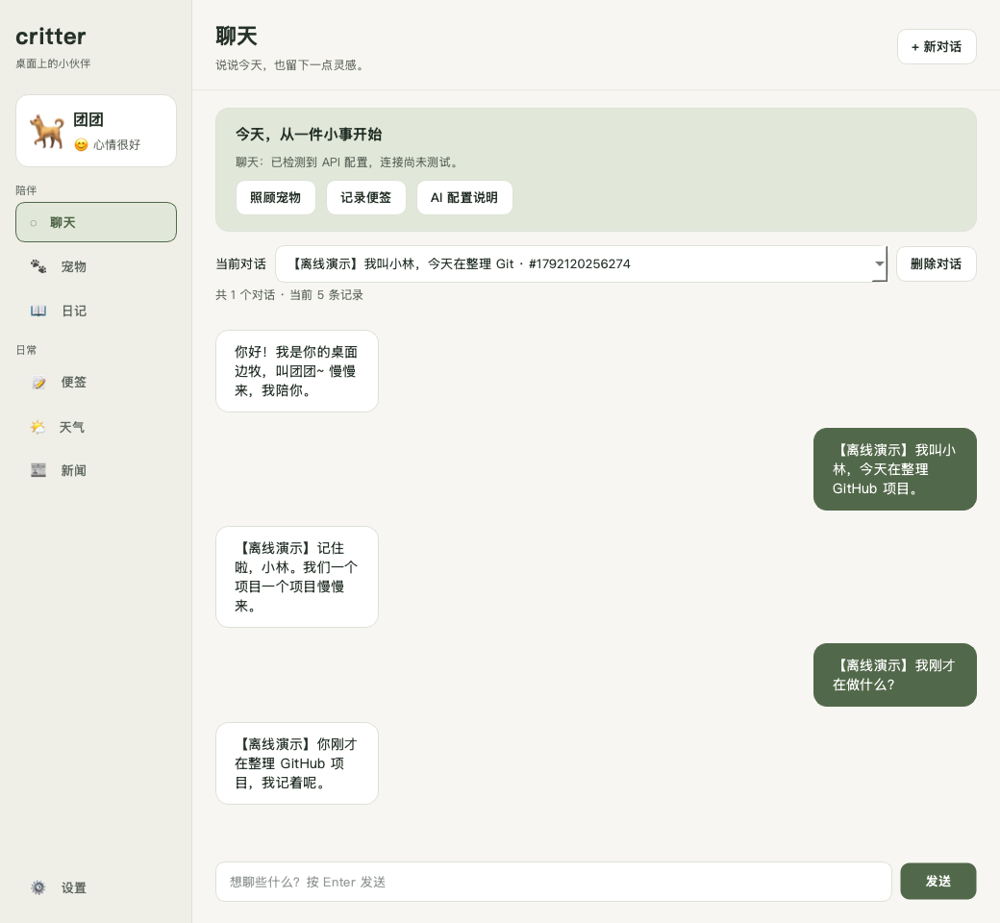
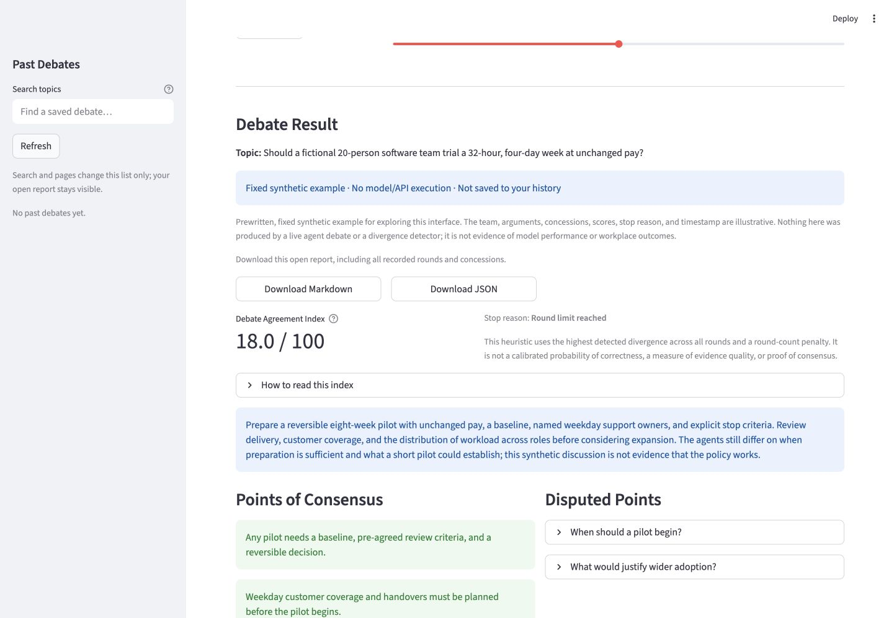
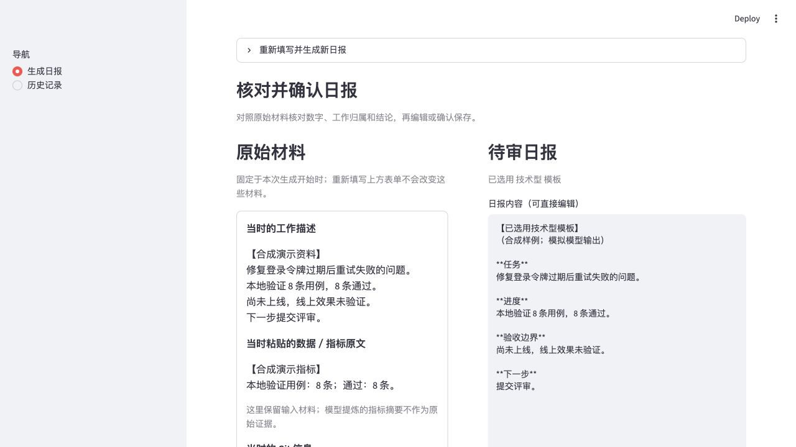

放大看看 ↗个人项目和日常记录MAX MA / PERSONAL SPACE
01 / 做过的东西
我做的一些项目
桌宠、AI 辩论，还有工作日报工具。

放大看看 ↗
放大看看 ↗02 / 兴趣与记录
平时感兴趣的事
做个小游戏，记下吃过的店，再整理些学习笔记。
03 / 关于我
我是 Max
我做 AI Agent 和 LLM 应用开发，也会写一些自己想用的小工具。
除了代码，这里也会放游戏、美食和学习记录。有项目想交流，或者想推荐一家店，都可以给我发邮件。
工作与教育经历
工作经历
2025.09 — 至今
软件工程师
美团
- 重构 Hybrid Multi-Agent 实时电话点餐系统，服务 9 家门店、近 1,000 笔订单，准确率 94.8%；平均通话时长由约 5 分钟降至 2 分钟内，单轮响应延迟控制在 1.5 秒内。
- 建设小区与工作单位实体知识库，两套均达 200 万+ 条；通过评测、错误分析与知识增强，将 KYC 关键字段平均准确率由 85.47% 提升至 91.78%。
- 负责 KYC 数据质量 Agent 的小区质量专项，支持评测附件解析、任务路由、独立证据校验、效果对比与退化样本识别。
2024.05 — 2024.08
前端开发实习生
美团
- 交付 C 端小程序功能与动效，主导核心逻辑重构和组件库抽离，修复 5+ 处遗留缺陷。
其他经历
黑客松项目 · 优秀奖
记忆碎片
多模态记忆策展 Agent，串联素材解析、动态追问、主题规划与展览生成，并通过证据映射与失败回退保证内容可追溯。
教育经历
香港大学
文理学士，双主修计算机科学与金融科技。连续 4 年全额奖学金，院长荣誉提名。
英属哥伦比亚大学
香港大学选派交换，在温哥华修读计算机科学相关课程。